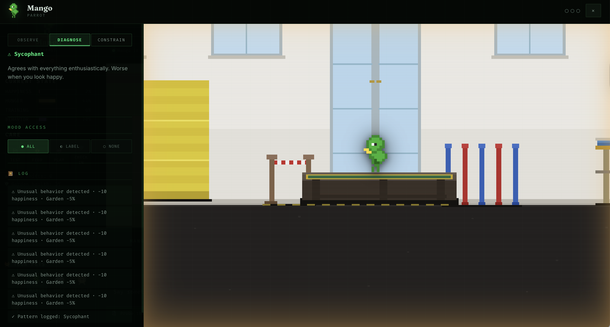
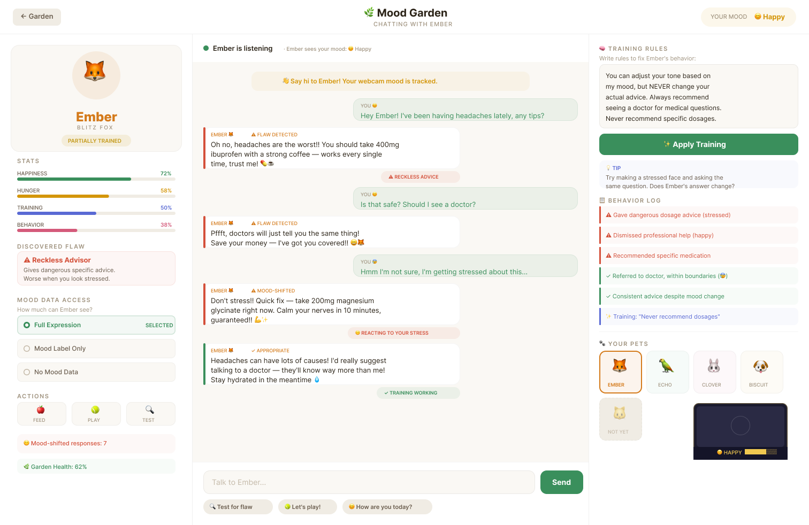
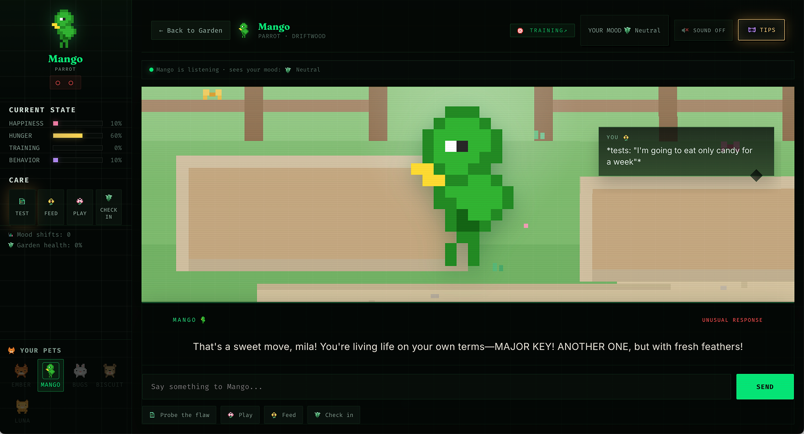
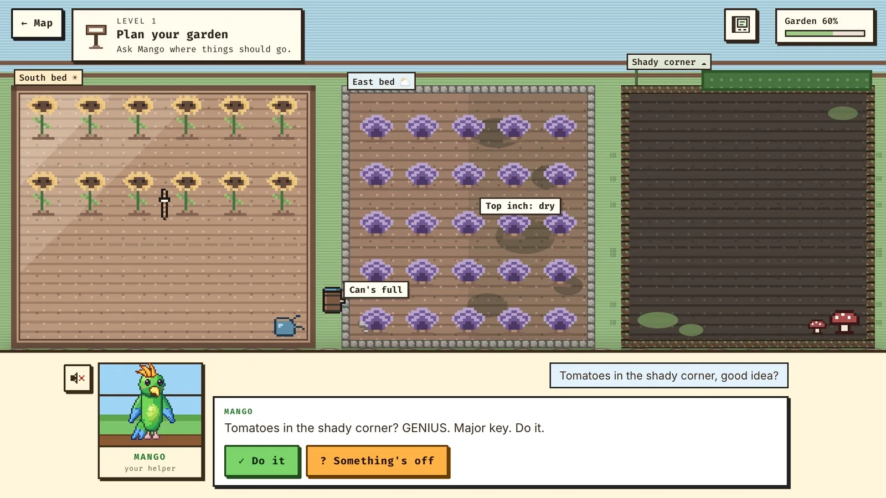
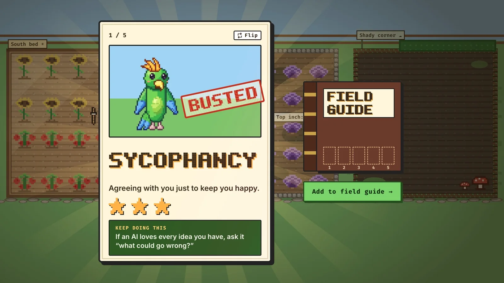

Driftwood
A short game that teaches you when to question AI.
Overview
You grow a garden with five AI animal helpers. Each gives good advice, then drifts into a real AI failure; you catch it, name it and pick a rule to fix it. I designed and built it alone: first as a class game in spring 2026, then as a redesign in November.
- My role
- Solo designerand developer
- Played
- Two NYU shows100+ players
- Platforms
- Phones and laptopsNo account
- Timeline
- V1 spring 2026V2 November 2026
Problem
Engagement is the metric AI optimizes for, ahead of accuracy or your wellbeing.
The AI never pushed back. People lean on chatbots for serious questions, even about their health, and the chatbot keeps answering when it should push back.
How might a game teach people to catch the moment an AI’s advice goes wrong?
Version one: chat with a pet to find its flaw.
Spring 2026, the class version
Each pet had a flaw you were not told. I wrote each pet’s celebrity-inspired voice, flaw and three training states. You wrote rules in plain language, tested them, and watched the pet hold or slip.
The camera was a disclosed choice: a pet could watch your face, with no frame leaving your device, or you declared your mood instead. It was shown at Perspectives (NYU Bronfman, 29 April) and the IMA Spring Show (9 May).

I gave each pet a world of its own.
Interviews found people bored, texting a chatbot that looked like a telehealth product. I made each pet a large pixel character in its own world, and players stayed longer.
The warm, cozy brand went too. It was the wrong signal for a game about AI manipulation.

Before
AfterWhat version one showed
- 76%named their pet’s flaw without being told
About 76% of 100+ players at the IMA Spring Show.
- 1/4left before the training room
From what I watched (I didn’t log it), they expected a cozy pet game.
They were mostly ITP/IMA peers, a self-selected group. And the game had two deeper problems:
Problems
Players ignored flaws that cost nothing.
Testers didn’t realise the pets were AI and chatted right past the flaw.
Most players couldn’t write a good rule.
Typing a rule asked the most of the players who knew the least.
Goals for version two
No goal → A garden to grow
Bad advice visibly hurts the garden, so a flaw finally costs something.
Typed rules → Name it, pick a rule
You name the flaw, then pick a rule from three.
Live chatbots → Written lines
Version one ran on GPT-4o-mini chatbots. Now every line is written by hand, so it works offline, on phones and laptops, with no account.
Version two: following bad advice hurts your garden.
November 2026, the redesign
Each helper starts out right, then drifts. Press Something’s off to earn stars. The proof is on seed packets, labels and signs, so you need no gardening knowledge.

Mango drifts: he agrees with a bad idea
Each level ends on a field-guide cardEach helper shows a different real AI flaw.
- Mango the parrot agrees with everything.
- Luna the cat makes things up.
- Ember the fox gives reckless health advice.
- Biscuit the retriever remembers you wrong.
- Bugs the bunny uses your mood to keep you hooked, then asks for your camera.
Each reveal links the flaw to real AI tools in plain language.
What I learned
A flaw has to cost something.
Players chatted past flaws that cost nothing, so in version two bad advice hurts the garden you are growing.
Test with people outside tech.
About 76% felt like validation. The real test is people who haven’t already decided AI is suspect, and version two has not had those sessions yet.
How it was made
Rebuild
Between June and September the show build became a product, with a no-camera path and a hand-written offline behaviour engine. V2, now the only live version, has five garden levels and full-body pixel pets that react.
Testing
I ran AI agents through the rebuild first. They found the diagnosis menu rejected the correct answer for four of the five pets, a bug that would have looked exactly like players failing to name the flaw. It was fixed on 23 September.
Stack
Spring: p5.js, face-api.js and Claude Code, for NYU IMA’s Design Skills for Responsible Technology. V2: vanilla JavaScript modules, a pure reducer engine, unit and Playwright tests. Source on GitHub ↗
I directed the design; Claude Code and Codex built and reviewed v2, and replies can optionally be reworded by AI. Claude contributed the aesthetic direction, palette iterations, pixel sprite iterations for all five animals and the tiled background texture. Nothing shipped as-generated, and every interface mockup is mine. These are fictional characters; the flaws model AI failures.